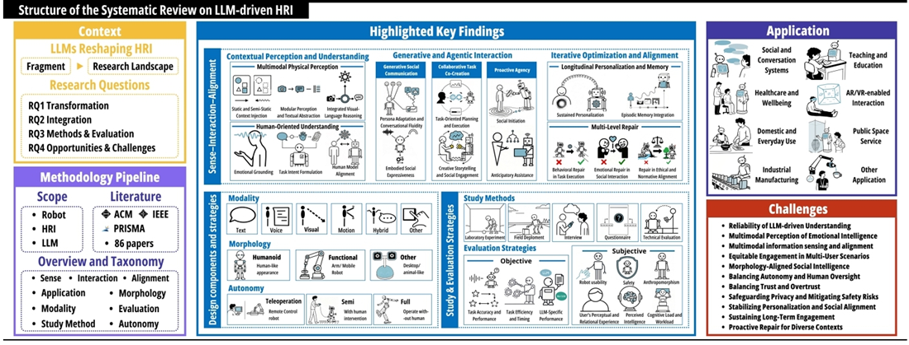

The Team



Advances in large language models (LLMs) are profoundly reshaping the field of human–robot interaction (HRI). While prior work has highlighted the technical potential of LLMs, few studies have systematically examined their human-centered impact (e.g., human-oriented understanding, user modeling, and levels of autonomy), making it difficult to consolidate emerging challenges in LLM-driven HRI systems. Therefore, we conducted a systematic literature search following the PRISMA guideline, identifying 86 articles that met our inclusion criteria. Our findings reveal that: (1) LLMs are transforming the fundamentals of HRI by reshaping how robots sense context, generate socially grounded interactions, and maintain continuous alignment with human needs in embodied settings; and (2) current research is largely exploratory, with different studies focusing on different facets of LLM-driven HRI, resulting in wide-ranging choices of experimental setups, study methods, and evaluation metrics. Finally, we identify key design considerations and challenges, offering a coherent overview and guidelines for future research at the intersection of LLMs and HRI.